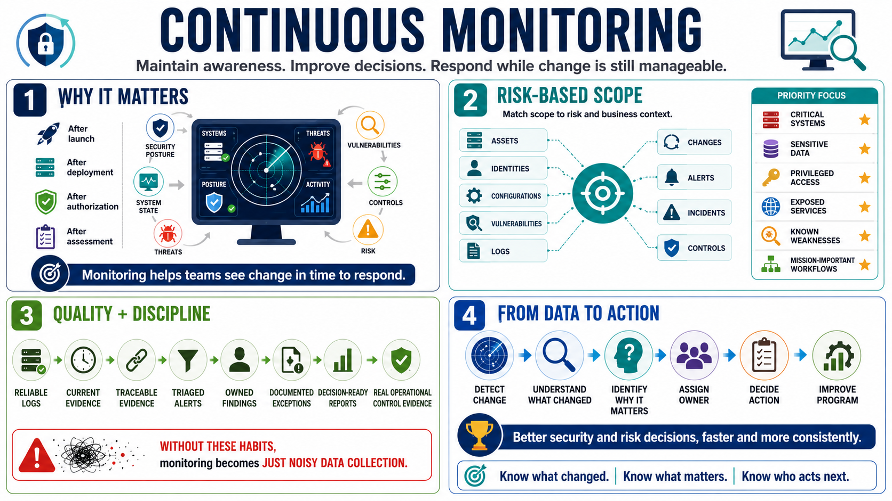

Course Summary and Key Takeaways
Connecting to LMS... Progress: in progress

Narration
Continuous monitoring helps organizations maintain awareness of changing security posture, system state, threats, vulnerabilities, control effectiveness, and risk. It is the practice of watching the things that matter after launch, after authorization, after deployment, and after the last assessment. Systems change, threats change, and business use changes. Monitoring helps teams see those changes while there is still time to respond.
Effective monitoring is scoped, risk-based, evidence-driven, owned, reviewed, and connected to remediation. It should cover assets, identities, configurations, vulnerabilities, logs, changes, alerts, incidents, and controls in a way that matches risk and business context. The program should prioritize critical systems, sensitive data, privileged access, exposed services, known weaknesses, and mission-important workflows.
Strong monitoring depends on telemetry quality and operational discipline. Logs must be reliable. Evidence must be current and traceable. Alerts must be triaged. Findings must have owners. Exceptions must be documented. Reports must support decisions. Control evidence must reflect real operations. Without those habits, monitoring can become a noisy data collection exercise rather than a risk management capability.
The goal is not collecting more data. The goal is making better security and risk decisions faster and more consistently. Continuous monitoring should help teams understand what changed, what matters, who owns it, what action is needed, and how the program should improve. That is what turns monitoring from passive observation into practical security operations.